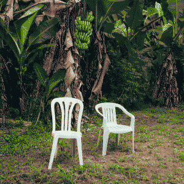

DeBÍ TiRAR MáS FOToS - bad bunny
type: album
genres: regueton, caribbean music
date released: 5 jan 2025
i had never listen to a bad bunny album so i decided to change that and listen to DebÍ TiRAR Más FOToS a couple of weeks ago after hearing that it had a fair mix of latin music genres like salsa, plena,and bomba besides the usual reguetón of course. just to feel like i'm part of the team. if you know where i'm from and know who bad bunny is then you'll get the joke. (growing up i never liked reguetón so i never went out of my way to listen to his music) i quite honestly don't remember most of the album since i first heard it a whileeeee back.
but i do remember having this nostalgic feeling towards it. idk it's a bit weird. i def remember more the more salsa centric songs compared to his reguetón stuff. man i just don't think i will ever like that genre  BUT NONETHELESS i am glad that didn't stop me from enjoying this album from what it is. it is very clear this is a love letter to Puerto Rico. and i think it really excels at that. i felt such an emotion while listening to this. i was smiling so big when i first heard BAILE INoLVIDABLE. the live band was suchhh a treat to listen to and the song itself is so groovy too. i mean OF COURSE it is, it's SALSA. this shit was made to dance to!
BUT NONETHELESS i am glad that didn't stop me from enjoying this album from what it is. it is very clear this is a love letter to Puerto Rico. and i think it really excels at that. i felt such an emotion while listening to this. i was smiling so big when i first heard BAILE INoLVIDABLE. the live band was suchhh a treat to listen to and the song itself is so groovy too. i mean OF COURSE it is, it's SALSA. this shit was made to dance to!
and there were also times where my heart felt so heavy listening to LO QUE LE PASÓ A HAWAii where bad bunny draws parallels between what happened in Hawaii to what's been happening in Puerto Rico. both places suffering the consequences of being under the US. being seen as Just a nice getaway, at the cost of locals having to move away and not being able to afford housing. It's really sad to think about. and i've never really been such a patriotic (?) person. but i know the difference of living here. and living in another place. and man its just fucking sucks that Puerto Rico has become what it is due to those greedy, in power, and without any heart. tax incentives given to foreigners "to better our economy" and for what? so they can buy public residences and abandoned public schools and turn them into fancy hotels? i don't know where the fuck this money is going to (99% to our corrupt government most likely) but it is not going to SOMETHING that is for the better of the people that actually live here and give a fuck about this place. fuck... incredible outro in that song btw. so haunting.
i think this is all i have to air out. he also released a short film prior to the album's release and the little toad character (and overall mascot of the album) animated in stop motion is SOOO charming. i was so scared of toads growing up. but this one is cute.
links: youtube playlist
highlights: BAILE INoLVIDABLE, LO QUE LE PASÓ A HAWAii, EL CLúB
rating: 

listened on 27.jan.25, published 08.feb.25